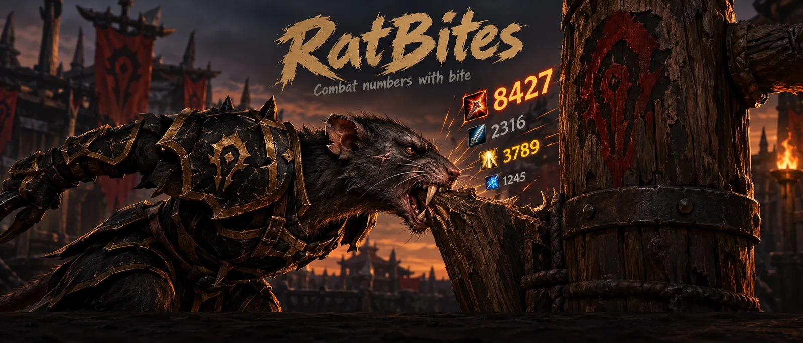
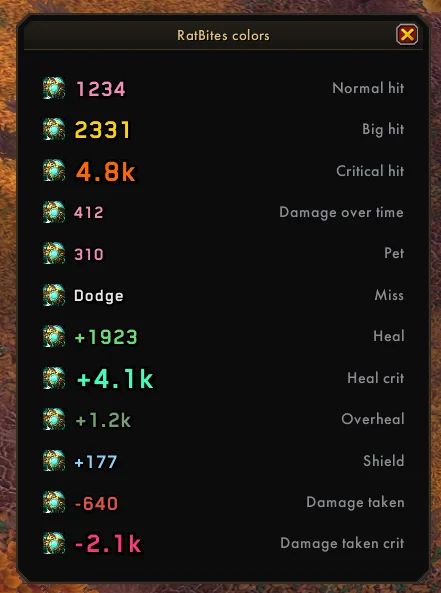

Five animations
Arc, Rise, Stay, Fountain or Fall, with sideways drift, travel distance and time on screen.
WotLK 3.3.5a · Released
Combat numbers with spell icons. Your hits and heals rise over each nameplate; what lands on you goes in its own box.

Every hit and heal rises over its target's nameplate with the spell's icon, or goes into the Output box. Heals, shields and hits on you go to the Input box.
x5
Grey hits, gold big hits, orange crits, green heals, mint heal crits, dim overheal, blue shields, red damage taken. Crits get a thick outline and bigger text.

Set it the way you like it.
Arc, Rise, Stay, Fountain or Fall, with sideways drift, travel distance and time on screen.
Normal or critical hits, auto-attacks, spells, damage over time, heals and shields, misses, pet.
Any font your addons share (ElvUI, SharedMedia), with text and icon size.
The game's own floating numbers turn off while RatBites runs and come back when you disable it.
/bites test puts one number of each kind on your target; /bites move unlocks
the boxes.
Straight from each release, newest first.
Loading the versions…
Friendly nameplates must be on for heal numbers; you can hide their look in your nameplate addon.
World of Warcraft\Interface\AddOns\RatBites/bites or the minimap rat opens the settings.